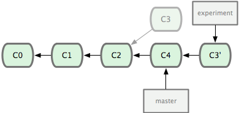

Git
新建本地分支 与 远程分支关联
创建 + 切换分支
1
git checkout -b newBranch
查看当前的本地分支与远程分支的关联关系
1
git branch -vv
将本地新建分支
push到自己的本地远程origin上，因为只在本地创建了一个新的分支，远程origin上还没有该分支1
git push origin newBranch
把本地分支与远程
origin的分支进行关联处理(通过--set-upstream-to命令)1
git branch --set-upstream-to=origin/newBranch
pull 代码时保持提交记录整洁
1 | git pull --rebase |
Git 仓库迁移，本地项目 git 地址变更：
for http(s)：
1
git remote set-url origin https://git.xxx.git
for ssh：
1
git remote set-url origin git@git.xxx.git
全局配置 git 用户名和邮箱
1 | git config --global user.name "Your Name" |
git push 错误 failed to push some refs to 解决
1 | git pull --rebase origin master |
将第三方库做为子项目添加到当前的站点目录下
1 | git submodule add https://github.com/yourname/hexo-theme-next themes/next |
导入子项目后，站点根目录会多出 .gitmodules 文件
fatal: refusing to merge unrelated histories 错误
如果合并了两个不同的仓库，在新的 git 会发现这两个仓库可能不是同一个，为了防止开发者上传错误，就会提示。
告诉 git 允许不相关历史合并：1
git pull origin master --allow-unrelated-histories
廖雪峰老师 Git 教程学习：
简介
Git 是目前世界上最先进的分布式版本控制系统（没有之一），它可以跟踪文本文件的改动，但无法跟踪图片、视频这些二进制文件的变化。
创建版本库：
- 创建一个空目录
将目录变成
Git可以管理的仓库：1
git init
成功后他会告诉你：这是一个空的仓库
empty Git repository，此时目录下会多出一个Git跟踪管理版本库的.git目录将修改的文件添加到仓库：也就是将修改的文件添加到暂存区
1
2
3
4
5// 添加 readme.txt
git add readme.txt
// 添加所有已改动的文件
git add .一次性提交暂存区的所有修改到当前分支：为最近的修改保存一个快照，并且生成一个全局唯一的版本号
1
git commit -m "本次提交的说明: wrote a readme file"
成功后他会告诉你：1 file changed：1个文件被改动（我们新添加的 readme.txt 文件）；2 insertions：插入了两行内容（readme.txt 有两行内容）
时光机穿梭
查看仓库当前的状态：
1
git status
成功后他会告诉你：哪些文件被改动过，哪些已经添加到仓库，而哪些还没有添加
- 查看工作区和版本库里最新版本的区别：显示的格式是
Unix通用的diff格式1
2
3
4
5// 查看全部修改
git diff
// 查看指定文件的修改
git diff HEAD -- readme.txt
版本回退一：前提是你还没有把自己本地的版本库推送到远程
查看提交的历史记录：按照时间倒序排列
1
2
3
4
5// 信息完整版
git log
// 信息简洁版
git log --pretty=oneline回退到上一个版本：
1
git reset --hard HEAD^
其中：
HEAD：当前版本HEAD^：上一个版本HEAD^^：上上一个版本- 指定上 N 个版本：
HEAD~N
⚠️成功后再次查看历史提交记录会发现：最新的版本到指定回退的版本之间所有的提交记录都已经不见了！
如果我想回去怎么办？只要命令行窗口还没有被关掉，找到最新版本的commit id，指定回到某个版本：1
git reset --hard ed84b68
版本号写前几位就可以了，Git 会自动去找
如果找不到新版本的 commit id 怎么办？
Git 专门提供了一个后悔药来记录你的每一次命令，里面有你每次操作的 commit id：1
git reflog
版本回退二：已经把本地的版本库推送到远程，即线上回滚
替换掉上次提交的代码文件（上次的
commit记录会被保留）：1
git revert HEAD
⚠️注意：
git reset与git revert的区别：
git revert是用一次新的 commit 来回滚之前的 commit，git reset是直接删除指定的 commit。- 在回滚这一操作上看，效果差不多。但是在日后继续 merge 以前的老版本时有区别。因为 git revert 是用一次逆向的 commit “中和”之前的提交，因此日后合并老的 branch 时，导致这部分改变不会再次出现，但是 git reset 是直接把某些 commit 在某个 branch 上删除，因而和老的 branch 再次 merge 时，这些被回滚的 commit 应该还会被引入。
- git reset 是把 HEAD 向后移动了一下，而 git revert 是 HEAD 继续前进，只是新的 commit 的内容和要 revert 的内容正好相反，能够抵消要被 revert 的内容。
工作区和暂存区
工作区：你在电脑里能看到的目录
版本库：工作区有一个隐藏目录 .git ，Git 的版本库里存了很多东西，其中最重要的就是称为 stage（或者叫 index）的暂存区，还有 Git 为我们自动创建的第一个分支 master，以及指向 master 的一个指针叫 HEAD，所以 HEAD 指向就是当前分支。
管理修改
Git 管理的是修改，而不是文件！
比如，我们这么操作：第一次修改 -> git add -> 第二次修改 -> git commit
这时 git status 你会发现，第二次的修改并没有被提交。因为当你用 git add 命令后，在工作区的第一次修改被放入暂存区，准备提交，但是，在工作区的第二次修改并没有放入暂存区，所以 git commit 只负责把暂存区的修改提交了，也就是第一次的修改被提交了，第二次的修改不会被提交。
⚠️如果不用 git add 到暂存区，那就不会加入到 commit 中。
撤销修改
- 丢弃工作区中的修改：
1
2
3
4
5// 丢弃工作区中某个文件的修改
git checkout -- readme.txt
// 丢弃工作区中所有文件的修改
git checkout -- .
其实是用版本库里的版本替换工作区的版本，无论工作区是修改还是删除，都可以“一键还原”。
- 丢弃暂存区中的修改，重新放回工作区：
1
2
3
4
5// 丢弃暂存区中某个文件的修改
git reset HEAD readme.txt
// 丢弃暂存区中所有文件的修改
git reset HEAD .
git reset 命令既可以回退版本，也可以把暂存区的修改回退到工作区。当我们用 HEAD 时，表示最新的版本。
从版本库中删除文件
1 | git rm test.txt |
创建远程仓库
- 注册
GitHub账号 - 创建
SSH Key：因为你本地的 Git 仓库和 GitHub 仓库之间的传输是通过SSH加密的
- 输入
cat ~/.ssh/id_rsa.pub如果有输出，说明之前生成过，直接 copy 里面的内容 - 如果没有输出，则需要输入
ssh-keygen -t rsa -C "youremail@example.com"然后一路回车，使用默认值即可。
如果一切顺利的话，可以在用户主目录里找到 .ssh 目录，里面有id_rsa和id_rsa.pub两个文件，这两个就是SSH Key的秘钥对，id_rsa 是私钥，不能泄露出去，id_rsa.pub 是公钥，可以放心地告诉任何人。
- 登陆
GitHub，打开“Settings”，“SSH and GPG keys”页面，点击New SSH key按钮，填上任意 Title，在 Key 文本框里粘贴 id_rsa.pub 文件的内容，点“Add Key” - 输入
ssh -T git@github.com，如果返回 Hi yourname! You've successfully authenticated, but GitHub does not provide shell access. 则说明公钥部署成功。
添加远程库：先有本地库，后有远程库的时候，如何关联远程库。
现在的情景是，你已经在本地创建了一个 Git 仓库后，又想在 GitHub 创建一个 Git 仓库，并且让这两个仓库进行远程同步，这样 GitHub 上的仓库既可以作为备份，又可以让其他人通过该仓库来协作，一举多得。
- 登陆
GitHub，在右上角找到“New repository”按钮，创建一个新的仓库：填写Repository name，其他保持默认设置，点击“Create repository”按钮，就成功地创建了一个新的 Git 仓库 目前 GitHub上 的这个仓库还是空的，GitHub 告诉我们，可以从这个仓库克隆出新的仓库，也可以把一个已有的本地仓库与之关联，然后把本地仓库的内容推送到 GitHub 仓库。
现在，关联远程库：1
git remote add origin git@github.com:JinYuanhui/learngit.git
把本地库的所有内容推送到远程库上：也就是把当前分支 master 推送到远程，仅第一次推送时使用
1
git push -u origin master
由于远程库是空的，我们第一次推送 master 分支时，加上了 -u 参数，Git 不但会把本地的 master 分支内容推送的远程新的 master 分支，还会把本地的 master 分支和远程的 master 分支关联起来，在以后的推送或者拉取时就可以简化命令。
从远程库克隆：先创建远程库，然后从远程库克隆。
- 登陆
GitHub，在右上角找到“New repository”按钮，创建一个新的仓库：填写Repository name，其他保持默认设置，勾选Initialize this repository with a README，这样 GitHub 会自动为我们创建一个README.md文件，点击“Create repository”按钮，就成功地创建了一个新的 Git 仓库 - 克隆本地库：
1
git clone git@github.com: JinYuanhui/gitskills.git
创建与合并分支
- 创建并切换到 dev 分支：
-b参数表示创建并切换1
git checkout -b dev
等同于：git branch dev + git checkout dev
查看分支：当前分支前面会标一个 * 号
1
2
3
4
5// 信息简洁版
git branch
// 信息完整版
git branch -vv在 dev 分支上正常修改并进行提交，再切换回 master 分支：发现之前修改的内容并没有在 master 分支上
- 合并指定分支到当前分支：
1
git merge dev
合并成功后会显示 Fast-forward，表示这次合并是“快进模式”
- 删除指定分支：
1
git branch -d dev
解决冲突 conflict
- 当 master 分支和 feature1 分支各自都分别有新的提交，Git 无法执行“快速合并”，而试图把各自的修改合并起来，就可能会有冲突。

- 产生冲突的文件，Git 会使用
<<<<<<<，=======，>>>>>>>标记出不同分支的内容，这时需要我们自己解决冲突。
完全放弃本地修改：
1
git checkout head .
也可以将工作区改动暂存到工作现场：
1
git stash
保存，然后重新提交到远程仓库中。
现在，master 分支和 feature1 分支变成了下图所示：
可以使用 git log --graph --pretty=oneline --abbrev-commit 来查看当前分支的合并情况。
也可以使用 git log --graph 查看分支合并图。
分支管理策略
合并分支时，如果可能，Git 会用 Fast forward 模式，但这种模式下，删除分支后，会丢掉分支信息。
- 合并时强制禁用 Fast forward 模式：
--no-ff参数1
git merge --no-ff -m "merge with no-ff" dev
可以看到，不使用 Fast forward 模式，merge 后就像这样：
在实际开发中，我们应该按照几个基本原则进行分支管理：
- master 分支应该是非常稳定的，也就是仅用来发布新版本，平时不能在上面干活
- 干活都在 dev 分支上，也就是说，dev 分支是不稳定的，到某个时候，比如 1.0 版本发布时，再把 dev 分支合并到 master 上，在 master 分支发布 1.0 版本，你和你的小伙伴们每个人都在 dev 分支上干活，每个人都有自己的分支，时不时地往 dev 分支上合并就可以了。
Bug 分支：工作一半时修复 Bug 但不能提交代码
把当前工作现场“储藏”起来：用于临时储藏，无需commit，将变更保存在栈上
1
git stash
查看本地存储的工作现场 list：
1
git stash list
恢复最近一次的工作现场：
git stash apply：stash 内容并不删除，需要使用git stash drop来删除git stash pop：恢复的同时把 stash 的内容也一并删除
- 恢复某个版本的工作现场：
git stash apply stash@{0}
Feature 分支
- 强行删除 git commit 之后并没有合并的分支：
1
git branch -D feature-vulcan
多人协作
查看远程库的信息：远程仓库的默认名称是
origin1
2
3
4
5// 显示简洁信息
git remote
// 显示详细信息：显示可以抓取和推送的 origin 地址。如果没有推送权限，就看不到 push 地址。
git remote -v推送分支：把分支上的所有本地提交推送到远程库。推送时要指定本地分支，这样 Git 就会把该分支推送到远程库对应的远程分支上
1
git push origin dev
抓取分支：把最新的提交从远程分支上抓取下来并试图合并
1
git pull
等同于：git fetch + git merge origin/dev
- 如果提示
no tracking information，则设置本地分支与远程分支的链接：1
git branch --set-upstream-to=origin/dev
Rebase 变基
每次先 pull，合并再 push，分支的时间线就会变的很混乱，我们想要 Git 的提交历史是一条干净的直线就需要 Rebase。
- 把分叉的提交历史“整理”成一条直线：缺点是本地的分叉提交会被修改
1
git rebase
Git 把我们本地的提交“挪动”了位置，放到远程仓库最后一次提交之后，这样整个提交历史就成了一条直线。rebase 操作前后，最终的提交内容是一致的，但是我们本地的 commit 修改内容已经变化了，它们的修改不再基于最开始我们切换分支时的最后一次提交，而是基于远程仓库最后一次提交，但最后提交的内容是一致的。
标签管理
发布一个版本时，我们通常先在版本库中打一个标签 tag，这样就确定了唯一打标签的版本，将来无论什么时候取某个标签的版本，就是把那个打标签的历史版本取出来，标签也是版本库的一个快照，它是指向某个 commit 的指针，但标签不能移动，所以创建和删除标签都是瞬间完成的。
创建标签
- 切换到需要打标签的分支上
打一个新标签：默认标签是打在最新提交的 commit 上
1
git tag v1.0
查看所有标签：标签是按字母排序的
1
git tag
给某次提交打标签：找到历史提交的 commit id
1
git tag v0.9 f52c633
查看标签信息：
1
git show v0.9
创建带有说明的标签：-a 指定标签名，-m 指定说明文字
1
git tag -a v0.1 -m "version 0.1 released" 1094adb
⚠️注意： 标签是和某个 commit 挂钩的。如果这个 commit 既出现在 master 分支，又出现在 dev 分支，那么在这两个分支上都可以看到这个标签。
操作标签
删除标签：创建的标签都只存储在本地，不会自动推送到远程。所以打错的标签可以在本地安全删除
1
git tag -d v0.1
推送标签到远程：
1
2
3
4
5// 推送某个标签到远程
git push origin v1.0
// 一次性推送全部尚未推送到远程的本地标签
git push origin --tags删除远程标签：
先从本地删除：
1
git tag -d v0.9
再从远程删除：
1
git push origin :refs/tags/v0.9
使用 GitHub
如何参与一个开源项目呢？
- 访问它的项目主页，点
“Fork”在自己的账号下克隆一个仓库，然后从自己的账号下clone。一定要从自己的账号下 clone 仓库，这样你才能推送修改。如果从作者的仓库地址克隆，因为没有权限你将不能推送修改。 - Bootstrap 的官方仓库 twbs_bootstrap、你在 GitHub 上克隆的仓库 my_bootstrap，以及你自己克隆到本地电脑的仓库，他们的关系就像下图显示的那样：

- 如果你想修复 bootstrap 的一个 bug 或者新增一个功能，立刻就可以开始干活，干完后往自己的仓库推送。
- 如果你希望 bootstrap 官方库能接受你的修改，你就可以在 GitHub 上发起一个 pull request。
自定义 Git
让 Git 显示颜色：
1
git config --global color.ui true
忽略特殊文件：在 Git 工作区的根目录下创建一个特殊的
.gitignore文件，然后把要忽略的文件名填进去， Git 就会自动忽略这些文件。
忽略文件的原则是：
- 忽略操作系统自动生成的文件，比如缩略图等；
- 忽略编译生成的中间文件、可执行文件等，也就是如果一个文件是通过另一个文件自动生成的，那自动生成的文件就没必要放进版本库，比如Java编译产生的 .class 文件；
- 忽略你自己的带有敏感信息的配置文件，比如存放口令的配置文件。
- 把 .gitignore 文件提交到 Git
配置别名
告诉 Git，以后
st就表示status：1
git config --global alias.st status
用
co表示checkout：1
git config --global alias.co checkout
用
ci表示commit：1
git config --global alias.ci commit
用
br表示branch：1
git config --global alias.br branch
用
unstage表示reset HEAD：1
git config --global alias.unstage 'reset HEAD'
用
last表示log -1显示最后一次提交信息：1
git config --global alias.last 'log -1'
配置 Git 的时候，加上 --global 是针对当前用户全局起作用的，如果不加那就只针对当前仓库起作用。
配置文件放哪了？每个仓库的 Git 配置文件都放在 .git/config 文件中，别名就在 [alias] 后面，要删除别名，直接把对应的行删掉即可。
而当前用户的 Git 配置文件放在用户主目录下的一个隐藏文件 .gitconfig 中。
git merge 与 git rebase 的区别
初始状态如图：
- 使用
git merge合并两个分支：1
2git checkout master
git merge experiment
得到的 commit log 如图：
- 首先找到 master 和 experiment 中最新 commit 的最近公共祖先，在这里就是 c4 和 c3 的最近公共祖先 c2。
- 将 experiment 分支上在 c2 以后的所有 commit 合并成一个 commit，并与 master 合并。
- 如有合并冲突（两个分支修改了同一个文件），首先人工去除重复。
- 在 master 上合并后产生新的 commit。
- 使用
git rebase合并两个分支：1
2git checkout experiment
git rebase master
得到的 commit log 如图：

- 首先找到 master 和 experiment 中最新 commit 的最近公共祖先，在这里就是 c4 和 c3 的最近公共祖先 c2。
- 将 experiment 分支上在 c2 以后的所有 commit 全部移动到 master 分支的最新commit之后，在这里就是把 c3 移动到 c4 以后。我们通过移动 c3 到 master，代表着在 master 上进行 c3 相应的修改，为了达成这一点，只需在 experiment 分支上 rebase master。
⚠️注意：rebase 并不是直接将 c3 移动到 master 上，而是创建一个副本，我们可以通过实际操作发现这一点。在 rebase 前后，c3 的 hash code 是不一样的。 - 在这之后，我们只需要在 master 上进行一次前向合并 (fast-forward merge)。

何时使用 git rebase
我们一般只在本地开发的时候 rebase 一个自己写出来的 branch。
⚠️谨记，千万不要 rebase 一个已经发布到远程 git 服务器的分支。例如，如果你将分支 experiment 发布到了 GitHub，那么你就不应该将它 rebase 到 master 上，因为如果你将它 rebase 到 master 上，将对其他人造成麻烦，因为他会直线修改之前的 commit，导致历史记录错误🙅。
肉老师整理资料：
Git Workflow & Code Review Guide.pdf
参考：
廖雪峰 - Git 教程
Git速成班: git rebase - 子回的前端专栏 - 前端乱炖
#学习📒/Git#